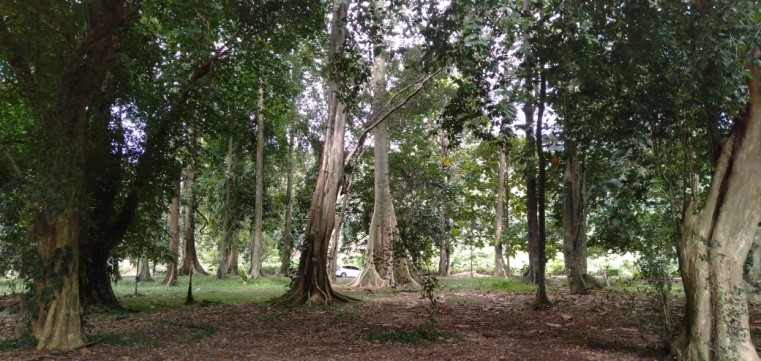
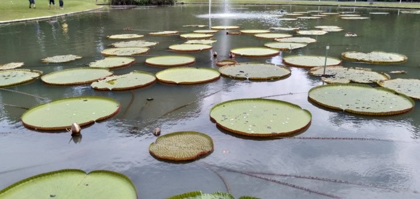
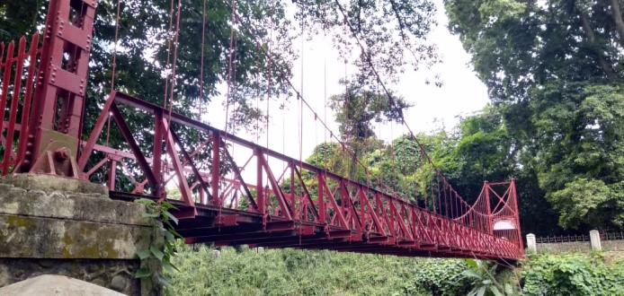

KEBUN RAYA BOGOR
by : Clyta
Halo, halo, Germies! Bagaimana kabar kalian? Semakin jenuh menghadapi buku pelajaran? Saat-saat kayak gini pasti rindu masa-masa liburan. Tapi mau jalan ke mana? Semua tempat yang lagi nge-tren dan fotogenik udah dikunjungi. Nah, saatnya kalian mengunjungi Kebun Raya Bogor!

Kebun botani seluas 87 hektare yang terletak di belakang Istana Bogor ini sering kali kita lupakan dari daftar tempat wisata untuk dikunjungi. Sebab apa sih yang bisa kitalakukan di kebun raya ini? Banyak sekali, kawan. Kebun dengan koleksi 15.000 spesiestumbuhan ini mungkin terlihat seperti hutan,tapi Kebun Raya Bogor juga memiliki area-area menarik yang dapat pengunjung nikmati untuk bersantai juga berfoto.
Berjalan-jalan santai atau berolahraga adalah kegiatan yang biasa dilakukan pengunjung Kebun Raya Bogor. Selain mendapat asupan udara segar yang jarang kita dapat di kota besar ini, mata kita juga
disegarkan kembali dengan melihat pohon-pohon hijau raksasa yang ada di sisi jalan. Pengunjung juga bisa duduk santai di bangku-bangku yang disediakan.
Kebun Raya Bogor juga merupakan tempat untuk belajar mengenai tumbuh-tumbuhan. Di sini biasa dilakukan penelitian. Terdapat Herbarium, Laboratorium, dan Museum Zoologi.

Selain itu, ada banyak taman yang bisa kita jadikan
tempat untuk bersama keluarga sambil berfoto- foto ria. Salah satunya Taman Astrid. Taman yang merupakan lapangan hijau ini memiliki sebuah kolam yang dipenuhi teratai raksasa. Terdapat juga sebuah kafe di bagian atasnya. Di depannya terdapat jalan yang dibagi menjadi dua oleh pagar bunga tasbih yang berwarna-warni. Sangat cocok dengan kalian yang suka selfie.

Masih ada banyak area di Kebun Raya Bogor yang layak dikunjungi, seperti Griya Anggrek, jembatan gantung,dan taman-taman lainnya. Kalau kalian sedang ke Bogor, jangan lupa mampir ke Kebun Raya Bogor. Tiket masuknya sangat terjangkau dengan harga Rp14.000 per orangnya. Pengunjung boleh membawa mobil pribadi jika hendak berwisata sekeluarga, tapi untuk motor disediakan tempat parkir.
Nah, itulah yang bisa kita lakukan di Kebun Raya Bogor. Semoga informasinya berguna bagi teman-teman. Mohon maaf jika ada kata-kata yang kurang berkenan. Sampai jumpa!